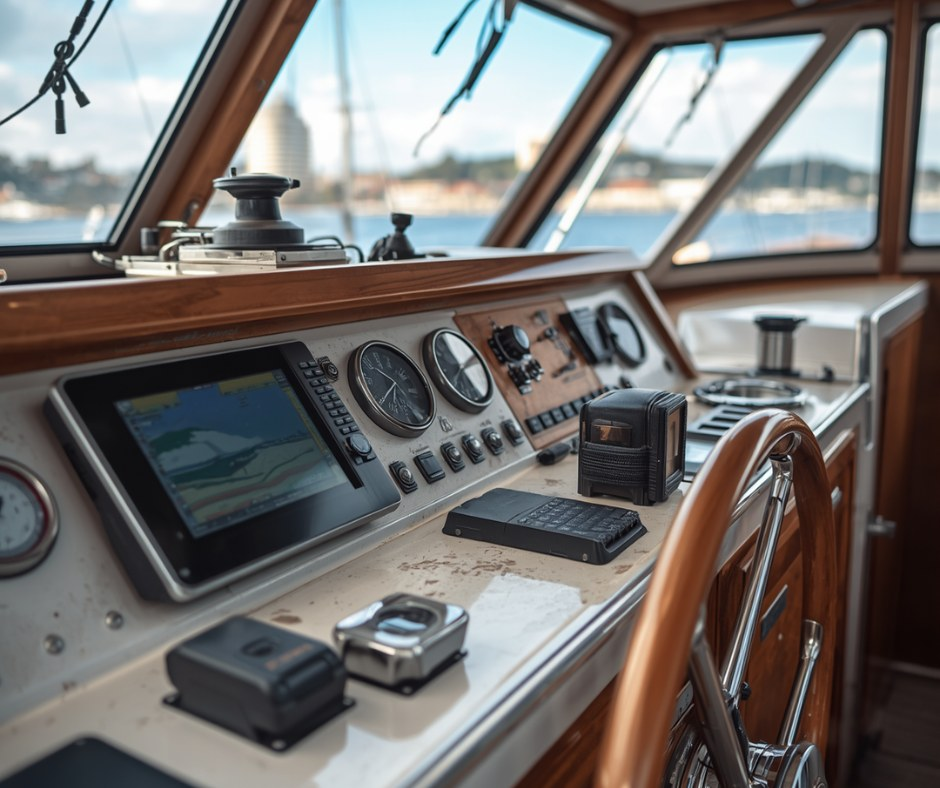
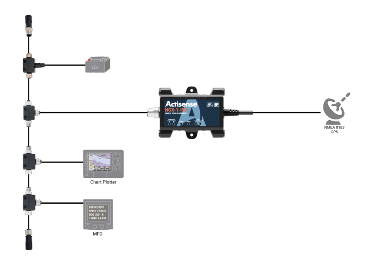
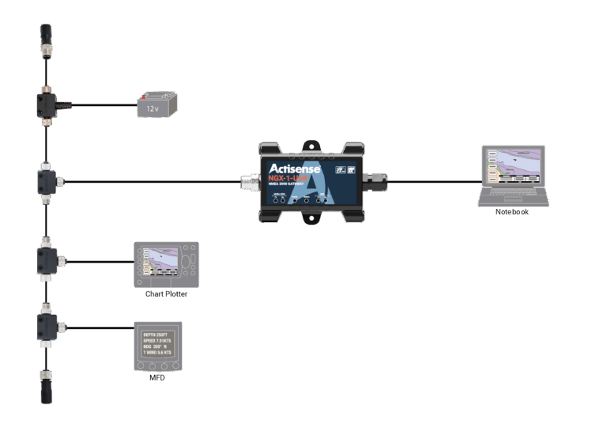
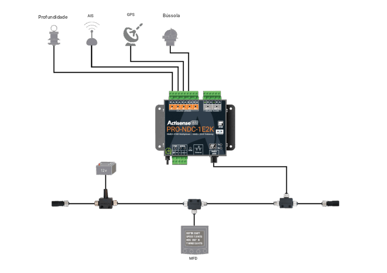
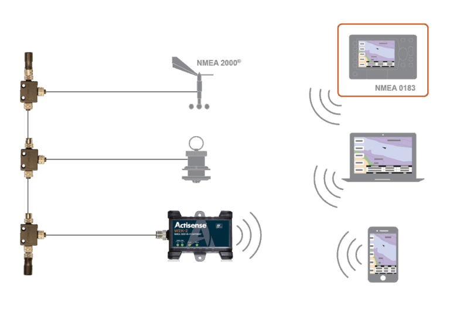
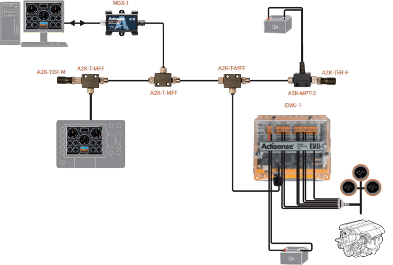

Resumo
- Barcos com eletrônicos NMEA 0183 mais antigos não precisam refazer toda a fiação para aproveitar uma rede NMEA 2000 moderna. Com gateways, os dois padrões funcionam lado a lado.
- O NMEA 0183 é um protocolo serial ponto a ponto. O NMEA 2000 é um barramento de rede para vários dispositivos, em que todos compartilham um único cabo backbone.
- O Actisense NGX-1 funciona como conversor bidirecional entre os dois padrões.
- O Actisense PRO-NDC-1E2K reúne multiplexação NMEA 0183, conversão para NMEA 2000 e transmissão por Ethernet em um único equipamento, no lugar do que antes exigia vários equipamentos separados.
- O Actisense W2K-2 acrescenta acesso sem fio à rede N2K, para que tablets e celulares com aplicativos de navegação recebam dados em tempo real sem conexão física.
- O Actisense EMU-1 digitaliza os dados analógicos do motor, como pressão do óleo e temperatura, para que os displays NMEA 2000 monitorem os motores da embarcação, sem o custo e o tempo de trocar o motor.
- O retrofit pode ser planejado com método e instalado sem refazer toda a fiação. Depois da instalação, os softwares gratuitos NMEA Reader e Toolkit da Actisense servem para monitorar e diagnosticar a rede.
Introdução
Se o seu barco foi equipado há mais de dez anos, é bem provável que os eletrônicos estejam interligados por NMEA 0183, o robusto padrão de comunicação serial que mantém os eletrônicos de navegação conversando entre si desde o início dos anos 1980. Ele funciona, é bem conhecido e muitos equipamentos ainda o utilizam. Mas chartplotters modernos, displays multifuncionais (MFDs), pilotos automáticos, transponders AIS e sistemas de instrumentos usam o NMEA 2000 (N2K), um padrão de rede mais rápido e mais capaz, que permite que muitos dispositivos compartilhem dados por um único cabo backbone.
A boa notícia é que você não precisa escolher entre o investimento que já fez e os benefícios do NMEA 2000. Com os gateways certos, os dois padrões funcionam lado a lado, e os dados são traduzidos de forma transparente entre eles.
Este artigo explica como o NMEA 2000 funciona, em que ele difere do NMEA 0183 e como usar os produtos Actisense para unir os dois mundos a bordo do seu barco.
Entendendo os dois padrões
NMEA 0183, o veterano
O NMEA 0183 é um protocolo serial ponto a ponto. Os dados são enviados como sentenças ASCII legíveis por pessoas, sequências padronizadas que começam com um cifrão, como $GPGGA para a posição do GPS ou $IIVHW para a velocidade na água. O protocolo normalmente opera a modestos 4800 baud, e o AIS opera a 38400 baud.
A limitação está na arquitetura. Se você quer que o GPS converse ao mesmo tempo com o chartplotter, o piloto automático e o rádio VHF, precisa ligar a saída do GPS às três entradas receptoras, e mesmo assim não é fácil fazer os dados circularem nos dois sentidos por um único par de fios. Acrescente mais dispositivos e a fiação vira um emaranhado. Embora o NMEA 0183 aceite a ligação de um emissor a vários receptores, isso exige muita fiação.
NMEA 2000, a rede moderna
O NMEA 2000 é uma rede de verdade, um barramento CAN (Controller Area Network) que opera a 250 kbit/s. Todos os dispositivos se conectam a um único cabo backbone por meio de cabos de derivação (drop cables) e conectores em T. Todo dispositivo pode transmitir e receber. Os dados são estruturados em Parameter Group Numbers (PGNs) binários, compactos, eficientes e padronizados. Basta ligar um novo dispositivo em qualquer ponto do backbone para que ele passe a fazer parte da rede.
O resultado é uma instalação mais limpa, taxas de dados mais altas e comunicação multimestre de verdade. Piloto automático, chartplotter, AIS, instrumentos de vento, ecobatímetro e monitor do motor compartilham o mesmo barramento, e todo dispositivo que precisa de um dado pode obtê-lo.
Por que Actisense?
A Actisense projeta e fabrica produtos de interface NMEA há mais de 25 anos e recebeu vários prêmios ao longo desse tempo. Seus equipamentos têm a confiança de instaladores profissionais, integradores de superiates e velejadores de regata. O ponto crucial para projetos de retrofit é que construímos nossa linha de produtos justamente em torno do problema de interligar e integrar equipamentos. Unir NMEA 0183 e NMEA 2000 não é um detalhe para nós, é uma missão central de engenharia.
Nossos produtos também são amplamente compatíveis com sistemas de outros fabricantes, como Garmin, Raymarine, Furuno, B&G, Simrad e Navionics, o que os torna realmente úteis diante da variedade de equipamentos que você provavelmente vai encontrar numa instalação real.
Planejando o retrofit
Antes de comprar qualquer equipamento, faça um levantamento do que você tem e do que quer alcançar.
- Levante os dispositivos NMEA 0183 existentes. Liste cada eletrônico a bordo e anote quais dados cada um produz (emissor) e quais consome (receptor). Fontes comuns incluem receptores GPS, transponders AIS, instrumentos de vento, ecobatímetros e odômetros (speed logs). Consumidores comuns incluem chartplotters, pilotos automáticos, rádios VHF com DSC e radares.
- Defina o que quer acrescentar. Vai instalar um MFD novo que só tem N2K? Um sistema de monitoramento do motor? Uma bússola de estado sólido com saída N2K? Saber o objetivo final define quais produtos Actisense você vai precisar.
- Defina o backbone. Se você vai instalar o NMEA 2000 do zero ao lado da rede 0183 existente, precisa planejar o trajeto do backbone pelo barco, normalmente do posto de comando, passando pela mesa de navegação, até os pontos onde ficam os principais sensores.
Principais produtos Actisense para o retrofit
NGX-1, o coração da ponte
O Actisense NGX-1 é o gateway duplo da geração atual, que reúne as funções dos antigos NGW-1 e NGT-1 em um único equipamento de bom custo-benefício. Conforme a configuração, ele funciona como conversor bidirecional NMEA 0183 ↔ NMEA 2000 ou como interface NMEA 2000 para PC, mas não as duas coisas ao mesmo tempo. Na maioria dos retrofits centrados na conversão de 0183 para N2K, ele é configurado no modo conversor.

Como conversor, o NGX-1 traduz sentenças NMEA 0183 em PGNs NMEA 2000 e vice-versa. Um receptor GPS que envia as sentenças $GPGGA, $GPRMC e $GPVTG por NMEA 0183 pode ter seus dados traduzidos nos PGNs 129025 (Position, Rapid Update), 129026 (COG & SOG, Rapid Update) e 127258 (Magnetic Variation) no backbone N2K, onde todo dispositivo N2K do barramento pode usá-los. Da mesma forma, dados N2K de um chartplotter ou piloto automático podem ser enviados de volta como sentenças 0183 para os equipamentos antigos.
O NGX-1 tem a biblioteca de conversões NMEA 0183/2000 mais ampla entre os gateways do mercado e é configurado pelo software gratuito Actisense Toolkit. Existem duas versões. O NGX-1-USB se conecta direto a um PC ou notebook por USB, para uso como gateway de PC. O NGX-1-ISO tem entrada NMEA 0183 optoisolada e saída ISO-Drive, para ligação direta a instrumentos 0183 ou a uma porta serial. As duas versões se conectam ao backbone N2K por um conector em T Micro padrão e são alimentadas pelo próprio barramento.
Configurado como interface de PC (modo transfer), o NGX-1 apresenta todo o barramento N2K ao computador conectado, para que softwares como TimeZero, OpenCPN ou Actisense NMEA Reader acessem todo o tráfego da rede. Ele também permite configurar outros produtos Actisense, como o EMU-1, pelo Actisense Toolkit.

Atenção. Como o NGX-1 só opera em um modo por vez, instalações que precisam ao mesmo tempo de conversão NMEA 0183 e de acesso do PC ao barramento N2K vão exigir dois NGX-1, um em cada modo, ou a combinação de um NGX-1 no modo transfer para PC com um PRO-NDC-1E2K cuidando da conversão de 0183 para N2K (veja abaixo).
Caso típico. Você tem um GPS plotter antigo com saída NMEA 0183 e um MFD Raymarine Axiom novo que fala NMEA 2000. O NGX-1, no modo conversor, fica entre os dois e coloca os dados de posição do GPS no backbone N2K, para que o Axiom e qualquer outro dispositivo N2K possam recebê-los. Outra opção, com um notebook como tela de navegação, é usar o NGX-1 no modo transfer para PC, que reúne todos os dados N2K (posição, velocidade, profundidade, vento, AIS) e os entrega ao OpenCPN ou ao TimeZero como um único fluxo.
PRO-NDC-1E2K, multiplexador e gateway profissional tudo em um
O Actisense PRO-NDC-1E2K é um avanço significativo em relação aos antigos combinadores NDC-4 e NDC-5 e, em muitas instalações de retrofit, muda bastante a arquitetura. Ele integra multiplexação NMEA 0183, conversão para NMEA 2000 e transmissão de dados por Ethernet em um único equipamento com aprovação de tipo RINA, o que faz dele o primeiro multiplexador com aprovação de tipo do mundo a reunir os três protocolos de conectividade.
O PRO-NDC-1E2K oferece cinco entradas NMEA 0183 optoisoladas e duas saídas NMEA 0183 ISO-Drive (a porta serial acrescenta uma sexta entrada e uma terceira saída), conexão direta ao backbone NMEA 2000 por conector M12 e uma porta Ethernet. A taxa de transmissão é configurável em cada entrada, de modo que dispositivos de 4800 e de 38400 baud podem ser misturados no mesmo equipamento sem problema. Filtragem avançada por sentença, roteamento de dados e troca automática entre fontes de entrada primária, secundária e terciária dão ao instalador controle preciso sobre quais dados vão para onde.

Com a conectividade NMEA 2000 integrada, em muitos cenários de retrofit o PRO-NDC-1E2K pode substituir, numa única caixa, tanto o antigo combinador NDC-5 quanto o gateway NGW-1. Todos os dados 0183 combinados são convertidos direto em PGNs N2K e colocados no backbone, sem um gateway separado no caminho.
A porta Ethernet permite transmissão bidirecional de dados em alta velocidade, em vários formatos (NMEA 0183, RAW, Actisense NGT e outros), para qualquer dispositivo de uma rede IP já existente a bordo. Isso elimina por completo as limitações de largura de banda da comunicação serial e permite que o PRO-NDC-1E2K compartilhe dados ao mesmo tempo com chartplotters, MFDs e softwares clientes por meio de um switch de rede. A configuração é feita toda por uma interface web no navegador, sem software proprietário nem conexão serial. Basta ligar um cabo Ethernet a um notebook ou roteador e acessar o endereço do equipamento.
O PRO-NDC-1E2K vem em um gabinete robusto de aço inoxidável, pode ser montado em painel e tem a garantia de cinco anos da Actisense para produtos registrados.
Caso típico. Seu barco tem um instrumento de vento NASA Target, um GPS Garmin 152, um ecobatímetro comum e um transponder AIS Standard Horizon operando a 38400 baud. Os quatro se ligam às entradas do PRO-NDC-1E2K. O equipamento combina, filtra e converte esses dados, colocando-os direto no backbone N2K pelo conector M12, e ao mesmo tempo os transmite por Ethernet para um notebook com OpenCPN. Não é preciso gateway nem combinador separado.
W2K-2, acesso sem fio à rede N2K
O Actisense W2K-2 é o gateway Wi‑Fi da geração atual e substitui o W2K-1. Ele se conecta ao backbone NMEA 2000 e disponibiliza sem fio todo o fluxo de dados da rede, para que aplicativos de navegação para iPad, como Navionics, iNavX ou SEAiq, recebam em tempo real dados de GPS, AIS, profundidade, vento e instrumentos sem nenhuma conexão física.
O W2K-2 aceita até três servidores de dados simultâneos por TCP ou UDP, com formatos selecionáveis conforme o aplicativo ou software de navegação usado. Ele tem conversão integrada de NMEA 2000 para NMEA 0183, de modo que aplicativos antigos, que só entendem sentenças 0183, também recebem sem fio os dados da rede N2K. A segurança foi atualizada para WPA3, um passo à frente do WPA2 usado por muitos gateways sem fio concorrentes, com SSID e senha únicos impressos em cada unidade. O W2K-2 funciona ao mesmo tempo como ponto de acesso, criando sua própria rede Wi‑Fi, e como cliente, entrando numa rede de bordo já existente, o que dá flexibilidade para diferentes cenários de instalação.

O registro de dados a bordo usa um slot para cartão micro SD de até 128 GB, que permite gravar semanas ou mais de todo o barramento N2K no formato EBL (Electronic Binary Log), com acesso remoto para análise depois da viagem, revisão de dados de regata ou diagnóstico de falhas. As ferramentas de diagnóstico Actisense-i vêm de série e permitem monitorar a tensão do barramento e o estado dos dispositivos a partir de qualquer navegador conectado. O equipamento mede e informa automaticamente a tensão do barramento N2K e consome menos de 2 LEN, mantendo baixo o consumo de energia.
Para quem faz retrofit, o W2K-2 acrescenta a dimensão sem fio ao backbone N2K que está sendo montado e moderniza na hora a forma como tripulação e convidados acessam os dados de navegação, sem mexer na infraestrutura 0183 cabeada já existente.
EMU-1, dados do motor na rede N2K
Muitos motores a diesel mais antigos têm sensores analógicos de pressão do óleo, temperatura do líquido de arrefecimento e tensão do alternador, que alimentam relógios analógicos tradicionais. O Actisense EMU-1 (Engine Monitoring Unit) se liga a esses sensores existentes e envia os dados como PGNs NMEA 2000 (PGN 127488, 127489, 127505 e outros), tornando os dados do motor disponíveis em qualquer MFD ou display de instrumentos N2K.

Para quem faz retrofit numa instalação de motor mecânico já consolidada, isso é transformador. Você ganha monitoramento do motor no novo chartplotter ou display N2K sem trocar o motor, apenas aproveitando os fios dos sensores existentes.
Um cenário típico de ligação em retrofit
Para mostrar como esses produtos funcionam juntos, considere um veleiro típico.
Equipamentos existentes
- Instrumentos de vento e profundidade NASA Target (saída NMEA 0183, 4800 baud)
- Chartplotter Garmin GPS 152H (saída NMEA 0183, 4800 baud)
- VHF com AIS Standard Horizon, com saída AIS (NMEA 0183, 38400 baud)
Equipamentos novos
- MFD Raymarine Axiom 9 (NMEA 2000)
- Piloto automático Garmin GHP 10 (NMEA 2000)
A solução Actisense
- Instale um backbone NMEA 2000 do posto de comando até a mesa de navegação, usando a linha de cabos Actisense A2K.
- Ligue o Axiom 9 e o piloto automático GHP 10 ao backbone por conectores em T e cabos de derivação.
- Ligue os instrumentos NASA, o GPS Garmin e a saída AIS do Standard Horizon às entradas do PRO-NDC-1E2K.
- Ligue o PRO-NDC-1E2K direto ao backbone N2K pelo conector M12. O equipamento faz internamente a multiplexação e a conversão de NMEA 0183 para N2K, sem gateway separado para esse caminho de dados.
- Acrescente o W2K-2 ao backbone para transmitir os dados sem fio para iPads e celulares com Navionics ou outros aplicativos de navegação.
- Se também for preciso um software de navegação no PC, como OpenCPN ou TimeZero, acrescente ao backbone um NGX-1 no modo transfer (interface de PC) e ligue-o ao notebook por USB. Outra opção é usar a saída Ethernet do PRO-NDC-1E2K para alimentar o notebook direto pela rede de bordo.
O resultado. O Axiom 9 mostra vento, profundidade, posição GPS e alvos AIS vindos dos instrumentos 0183 existentes. O piloto automático recebe do backbone os dados de proa, velocidade e posição. O chartplotter GPS antigo continua funcionando de forma independente pela sua própria saída 0183. O VHF Standard Horizon continua recebendo do seu GPS interno a posição para o DSC, sem nenhuma alteração. A tripulação acessa todos os dados de navegação sem fio, em tablets, pelo W2K-2.
Dicas práticas de instalação
- Calcule o consumo de energia. O backbone NMEA 2000 é alimentado pelo próprio cabo do barramento, mas a fonte precisa ser adequada. A Actisense recomenda calcular o Load Equivalence Number (LEN) de todos os dispositivos do barramento e garantir que o injetor de energia ou a fonte dedicada suporte o consumo total. A maioria das instalações simples fica bem dentro do limite, mas sistemas maiores, com muitos dispositivos, merecem verificação.
- Mantenha o backbone organizado. A norma NMEA 2000 define comprimentos máximos para o backbone e para os cabos de derivação. Mantenha os cabos de derivação, do conector em T do backbone até o dispositivo, com menos de 6 metros sempre que possível. Use os terminadores corretos (120 ohms) nas duas pontas do backbone. Isso é indispensável para o funcionamento confiável da rede.
- Use os softwares NMEA Reader e Toolkit da Actisense. O utilitário gratuito Actisense NMEA Reader funciona com o NGX-1 no modo transfer e permite monitorar em tempo real todo o tráfego do backbone N2K, verificar se os PGNs estão sendo transmitidos corretamente e diagnosticar problemas de tradução. O aplicativo Actisense Toolkit faz a configuração completa do NGX-1, do EMU-1 e do PRO-NDC-1E2K e também atualiza o firmware dos equipamentos. Os dois são ferramentas indispensáveis no comissionamento.
A Actisense fez o trabalho pesado de engenharia para tornar essa abordagem híbrida prática e robusta. Para o dono do barco, o resultado é um retrofit que pode ser planejado com método, instalado sem refazer toda a fiação e que funciona com confiança no mar, que, afinal, é o que mais importa.
Resumo dos produtos
| Produto | Função | Uso principal |
|---|---|---|
| NGX-1 | Gateway duplo, conversor bidirecional NMEA 0183 ↔ N2K ou interface N2K para PC (um modo por vez) | Ponte entre a rede antiga e a nova, acesso do PC e de softwares ao barramento N2K |
| PRO-NDC-1E2K | Multiplexador NMEA 0183 com aprovação de tipo, conversão N2K integrada e Ethernet | Combinar vários instrumentos 0183 e colocar os dados direto no backbone N2K |
| W2K-2 | Gateway NMEA 2000 para Wi‑Fi com registro de dados e segurança WPA3 | Dados sem fio para tablets e celulares, gravação dos dados da viagem |
| EMU-1 | Unidade de monitoramento do motor | Coloca os dados analógicos do motor na rede N2K |
Leia também o guia Como montar uma rede híbrida NMEA 0183 e NMEA 2000?